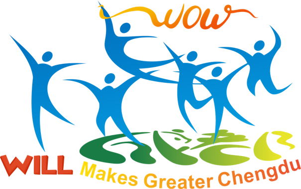

Chengdu Plant Unattended Operation Success Menu
Showcasing the Digital Transformation & Touchless Journey across Making, Packing, and QA.
--
Total Success Cases
>$300M
Est. Value Creation
>50'000
Touches Eliminated/Yr
167'200 Hrs
Effort Elimination/Yr
Making Dept (MSG)
Packing Dept (PSG)
QA Dept (QAC/QA)
×